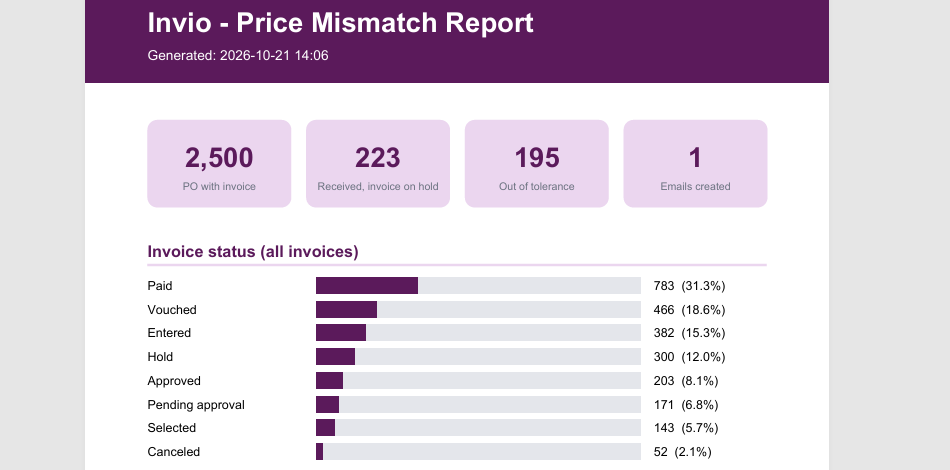
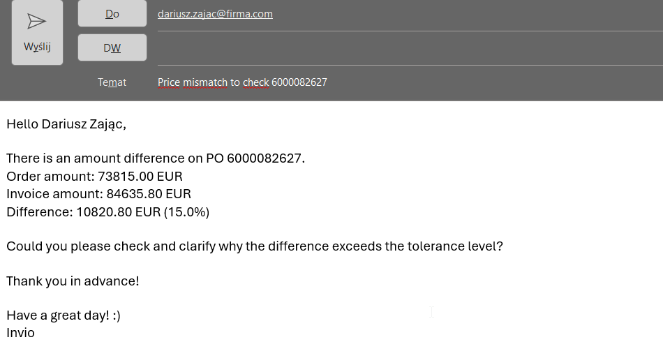
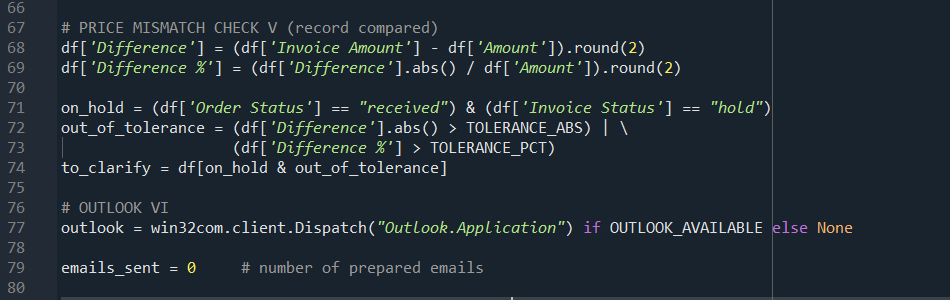

Problem
Price mismatches between a PO and an invoice block payments. Checking hundreds of entries and sending follow-ups to buyers by hand takes a lot of time.
Solution
Invio merges SAP Ariba PO data with invoice data, finds received POs whose invoice is on hold, calculates the net difference and e-mails the requestor when it is out of tolerance.
Result
No more manual checking of hundreds of entries: fewer FTEs, faster discrepancy resolution, and a PDF report with statistics for the administrator.

How it works
- Merges the purchase order table (Ariba) with the invoice table by PO number.
- Looks for POs with the status “received” in Ariba and “hold” in the invoice table.
- Calculates the net amount difference – in value and in % of the PO amount.
- If the difference is greater than 20 (in PO currency) or 5% of the PO value, the requestor gets an e-mail with the PO number, both amounts and the difference.
- The administrator gets a visual PDF report with statistics.
- Safe test mode: DRY_RUN = True opens only one e-mail for preview – nothing is sent.
The report contains
- KPIs: POs with invoice, received POs with invoice on hold, POs out of tolerance, e-mails created
- Invoice status – all statuses
- Price mismatch – direction (invoice above / below PO) and size of the difference (%)
- Net difference to clarify – per currency
- Top 5 requestors with the most price mismatches
Why it matters
- Addresses a real operational problem that requires repetitive checks and follow-ups
- Helps reduce overdue invoices and the risk of supplier issues or reputational damage
- Built for a typical corporate environment with a logged-in Outlook
- Dedicated to SAP, but easy to adapt to reports from any other platform
Screenshots

